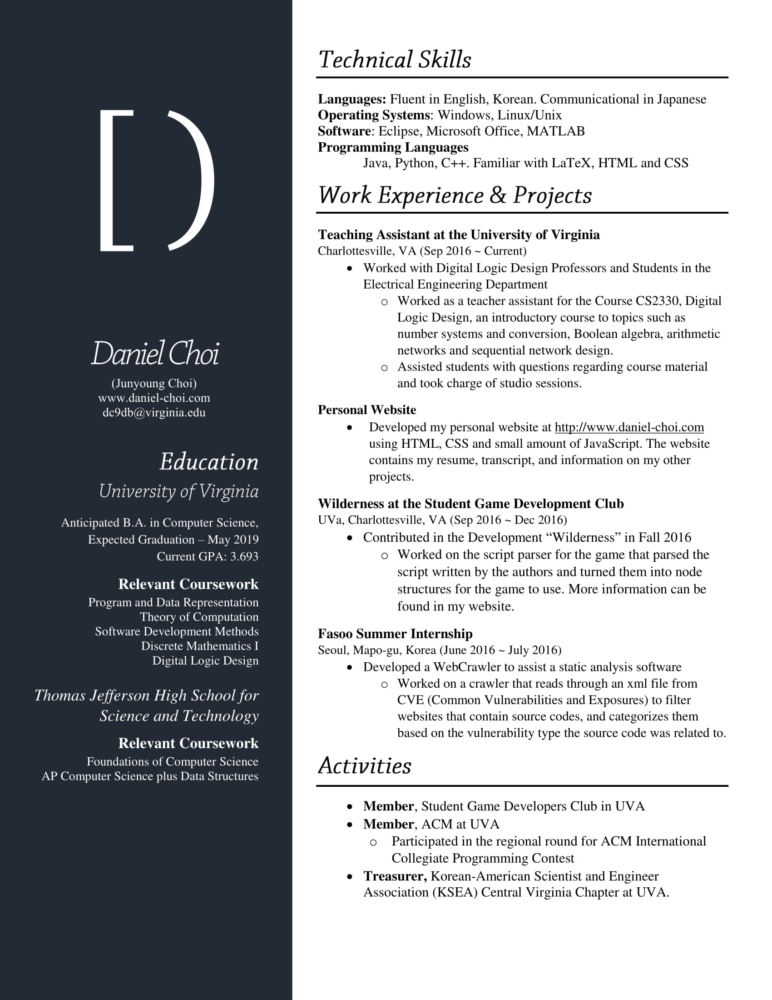

Home
About
Resume
Projects
Posts
Resume
Resume
Transcript
Courses Taken
CS3102 Theory of Computation
CS2150 Program and Data Representation
CS2110 Software Development Methods
CS2102 Discrete Mathematics
ECE2330 Digital Logic Design
[Course Name]
Grade:
Click course for description

(click image to open file)